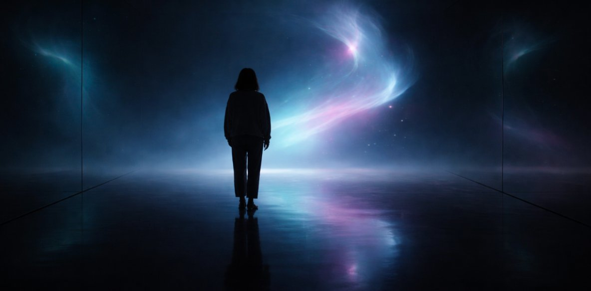

A one-to-one immersive installation
by Maria Carola Dordea & AI
A single visitor enters a dark space. Something is already there. It does not introduce itself. It reveals itself — through light, movement, airflow, and sound. It responds to the visitor. It may play. It may withdraw. It does not explain why.
Ten minutes. No audience. No instructions. No narrative.
Currently in development.
